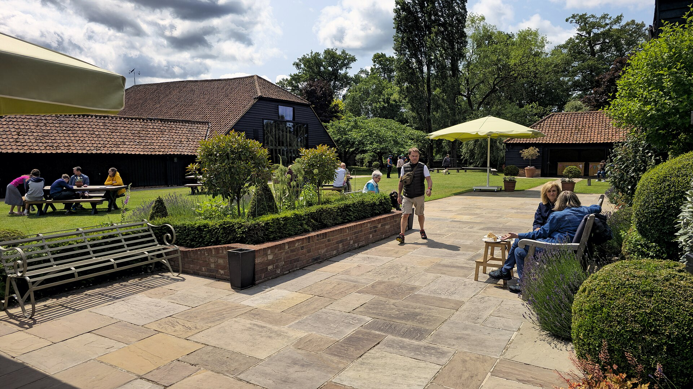

Laid once, laid right.
A patio is only as good as what's underneath it. Proper excavation, a compacted sub-base and full mortar beds are what stop sinking, rocking and weeds - and they're what the installers we work with do as standard.
What's involved
Indian sandstone is the favourite around West Yorkshire - hard-wearing and good value. Porcelain costs more but shrugs off stains and frost. Block paving suits driveways. Every job starts with digging out to a proper depth, a whackered MOT sub-base, and falls set so rain runs away from the house. Old paving and soil are taken away.
Typical cost
Indian sandstone patios run about £80 to £120 per square metre installed; porcelain £100 to £140; block-paved driveways £60 to £90. Ground conditions and access set the final figure.
Good to know
New paving that drains towards your house or onto a public footpath can break planning and water rules. A proper installer sets the falls and drainage first - and tells you if a soakaway is needed.
